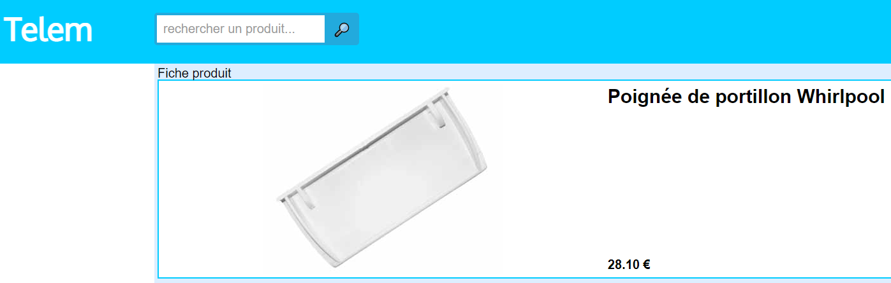
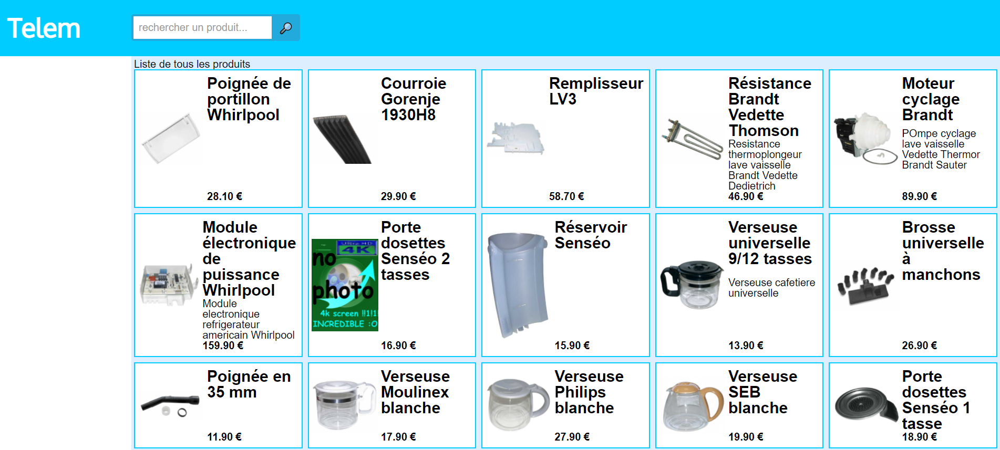
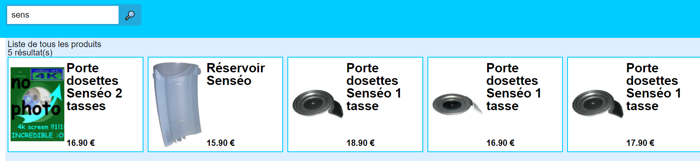

Le premier projet de fin d'année consiste en la construction du site de gestion des stocks de Telem (boutique fictive de vente de pièces détachées) en langage PHP (ainsi que le CSS et HTML / Twig) en utilisant le framework Symfony.
Symfony
Symfony est un framework PHP utilisant la structure MVC (Model, View, Controller) rendant le développement d'un site web plus aisé à l'aide par exemple de nouvelles méthodes et d'un CLI.
Compétences acquises
- Utilisation du framework Symfony
- Utilisation de la structure MVC
- Utilisation du gestionnaire de dépendances Composer
- Utilisation de l'ORM (Object-Relational Mapping) Doctrine
- Utilisation de Twig
- Utilisation de Webpack Encore
- Syntaxe BEM pour la mise en forme
- Intégration d'une barre de recherche
- Utilisation de SASS
Le projet Telem
Voici quelques images afin d'illustrer le site de Telem

Fiche produit

Liste de tous les produits

Recherche de produits